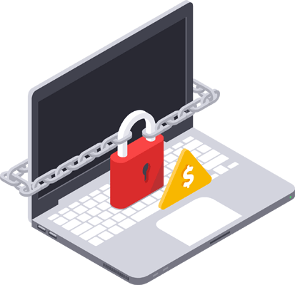

Best Practices

What is Ransomware?
Ransomware is a program that encrypts system files,
disabling access to them. Usually, a fee is demanded from the user
in order to restore them.
How do I take proper caution?
-
Follow the Best Practices to avoid contracting ransomware
-
Backup your data often and consider storing it on an external device